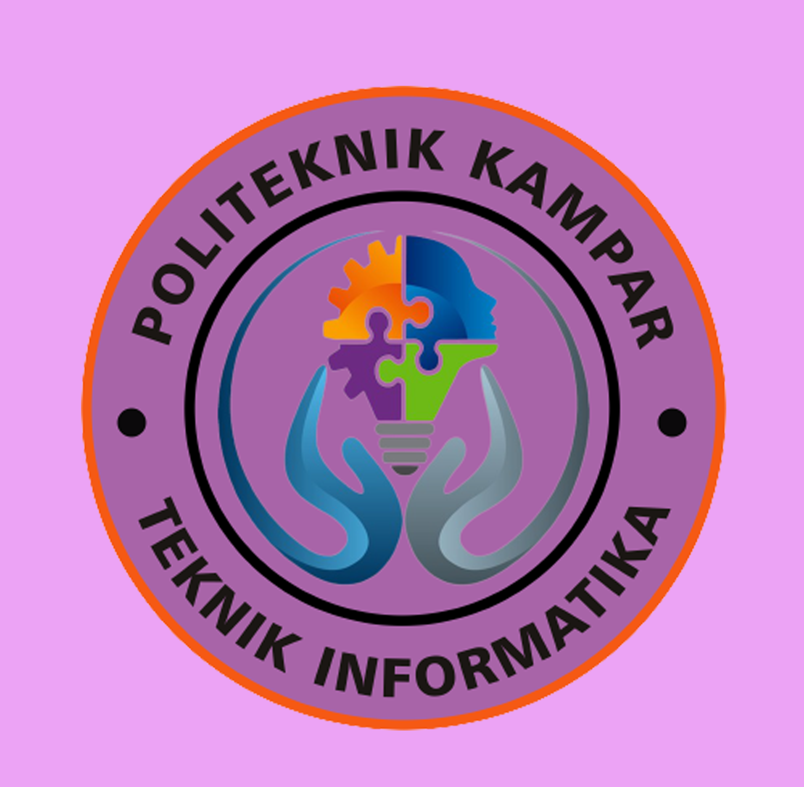

Teknik Informatika
Politeknik Kampar

Politeknik Kampar
"TERWUJUDNYA PROGRAM STUDI TEKNIK INFORMATIKA YANG UNGGUL, INOVATIF DAN TERKEMUKA BERBASIS TEKNOLOGI TERAPAN PADA TAHUN 2032".
Program Studi D3 Teknik Informatika Politeknik Kampar telah menjabarkan visi program studi menjadi rumusan misi program studi yaitu :
1. Menyelenggarakan pendidikan vokasional untuk mencetak tenaga kerja yang berkualitas.
2. Mengembangkan teknologi terapan melalui penelitian untuk mendukung perkembangan industri, khususnya industri sawit.
3. Berperan aktif memecahkan permasalahan masyarakat melalui pengabdian kepada masyarakat.
4. Menjalin kolaborasi dengan dunia usaha dan industri untuk menghadapi persaingan global.
Copyright @Kelompok Empat By Fitri Wahyuni